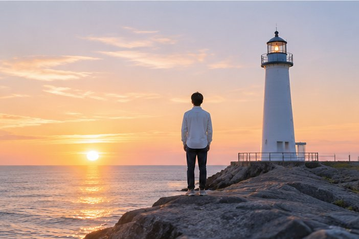

SERVICE TIMES예배 시간
오시는 길 ›
LIFE QUESTIONS · 인생질문
유튜브에서 보기 ›
잠시 멈추어 묻습니다
누구나 한 번쯤 마주하는 질문들, 1분이면 충분해요.
NEXT GENERATION · 다음세대
은혜(GRACE)로

은혜교회는 다음세대를 생각합니다
꿈꾸는 아동, 열정의 청년,
지지하는 장년과 지혜의 실버가 함께합니다.
꿈꾸는아동
열정의청년
지지하는장년

지혜의실버
VISION · 비전
예배로 세워지고,
은혜로 살아가며,
다음세대와 함께
세상을 품는 교회
우리 삶의 주인은 오직 예수님,
우리는 그 삶을 맡은 청지기입니다.
은혜(GRACE)로
세워지는 교회
은혜로 살아가는 은혜교회의 정신을 GRACE 다섯 글자에 담았습니다.
글자를 누르면 그 말씀이 열립니다.
God
하나님 중심
우리가 아니라 하나님과 예수 그리스도가 중심인 예배와 삶
그는 몸인 교회의 머리시라 그가 근본이시요 죽은 자들 가운데서 먼저 나신 이시니 이는 친히 만물의 으뜸이 되려 하심이요
골로새서 1:18 · 개역개정Root
말씀의 뿌리
성경을 함께 읽고 배우며 말씀 위에 서는 교회
그 안에 뿌리를 박으며 세움을 받아 교훈을 받은 대로 믿음에 굳게 서서 감사함을 넘치게 하라
골로새서 2:7 · 개역개정Abide
함께 머묾
목장에서 삶을 나누고 서로를 돌보는 작은 교회
날마다 마음을 같이하여 성전에 모이기를 힘쓰고 집에서 떡을 떼며 기쁨과 순전한 마음으로 음식을 먹고
사도행전 2:46 · 개역개정Call
부르심과 섬김
모든 성도가 받은 은사대로 한 자리씩 섬기는 교회
각각 은사를 받은 대로 하나님의 여러 가지 은혜를 맡은 선한 청지기 같이 서로 봉사하라
베드로전서 4:10 · 개역개정Embrace
이웃을 품음
받은 은혜로 이웃과 지역을 품는 교회
그러므로 그리스도께서 우리를 받아 하나님께 영광을 돌리심과 같이 너희도 서로 받으라
로마서 15:7 · 개역개정
GATHER & CONNECT
말씀으로 모이고,
말씀으로 모이고,
세상으로 흘러갑니다

담임목사박동준“지금까지 우리가 원하는 대로 된 것은 없었습니다.
하나님의 예비하심과 인도하심,
그것이 우리가 걸어온 길이고 은혜입니다.”
하나님의 예비하심과 인도하심,
그것이 우리가 걸어온 길이고 은혜입니다.”
SEE YOU THIS SUNDAY이번 주일, 은혜교회에서
함께 예배해요
처음 방문하기
함께 예배해요
주일 오전 11시 ·
처음 오셔도 편안한 자리가 준비되어 있어요.